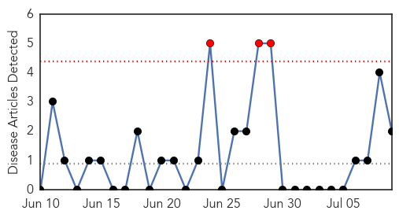
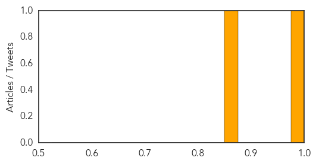
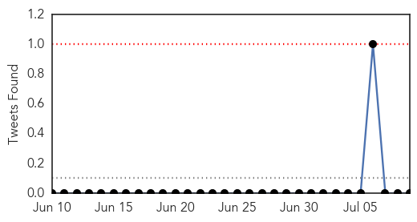

Pertussis
30-Day Web Trend
3 alerts, 0 warnings

30-Day Twitter Trend
0 alerts, 0 warnings

Article Locations

Article Confidences
Top Articles:
Top Tweets:
-
No tweets found for Jul 09, 2015
Cholera
30-Day Web Trend
0 alerts, 0 warnings

30-Day Twitter Trend
0 alerts, 0 warnings

Article Locations


Article Confidences

Top Articles:
- 0.996
- ICDDR, B study finds cholera vaccine ‘effective’
- 0.990
- Use these affordable technologies to steer away from cholera - Kachwanya.com
- 0.926
- Florida’s Supposed ‘Flesh-Eating’ Bacteria Claims Seven Lives
- 0.920
- Technology researcher discusses tracking disease outbreaks via social media
- 0.882
- News Scan for Jul 09, 2015
- 0.858
- World: Cholera vaccine works in real-life trial: study
- 0.597
- Tanzania: Services in Nyarugusu refugee camp ‘stretched beyond their limits’ - United Republic of Tanzania
- 0.551
- Patient consent in the UK
Top Tweets:
-
No tweets found for Jul 09, 2015